# Importing necessary libraries
import pandas as pd
import matplotlib.pyplot as plt
import seaborn as sns
from sklearn.model_selection import train_test_split, GridSearchCV
from sklearn.neighbors import KNeighborsClassifier
from sklearn.preprocessing import StandardScaler
from sklearn.metrics import confusion_matrix, ConfusionMatrixDisplay
from sklearn.metrics import accuracy_scoreIntroduction to Classification
IN2004B: Generation of Value with Data Analytics
Agenda
- Introduction
- K-Nearest Neighbours
- Confusion Matrix and Accuracy
- Finding the best value of K
Load the libraries
Before we start, let’s import the data science libraries into Python.
Here, we use specific functions from the pandas, matplotlib, seaborn and sklearn libraries in Python.
Main data science problems
Regression Problems. The response is numerical. For example, a person’s income, the value of a house, or a patient’s blood pressure.
Classification Problems. The response is categorical and involves K different categories. For example, the brand of a product purchased (A, B, C) or whether a person defaults on a debt (yes or no).
The predictors (\(\boldsymbol{X}\)) can be numerical or categorical.
Main data science problems
Regression Problems. The response is numerical. For example, a person’s income, the value of a house, or a patient’s blood pressure.
Classification Problems. The response is categorical and involves K different categories. For example, the brand of a product purchased (A, B, C) or whether a person defaults on a debt (yes or no).
The predictors (\(\boldsymbol{X}\)) can be numerical or categorical.
Terminology
Explanatory variables or predictors:
- \(X\) represents an explanatory variable or predictor.
- \(\boldsymbol{X} = (X_1, X_2, \ldots, X_p)\) represents a collection of \(p\) predictors.
Response:
\(Y\) is a categorical variable that takes 2 categories or classes.
For example, \(Y\) can take 0 or 1, A or B, no or yes, spam or no spam.
When classes are strings, they are usually encoded as 0 and 1.
- The target class is the one for which \(Y = 1\).
- The reference class is the one for which \(Y = 0\).
Classification algorithms
Classification algorithms use predictor values to predict the class of the response (target or reference).
That is, for an unseen record, they use predictor values to predict whether the record belongs to the target class or not.
Technically, they predict the probability that the record belongs to the target class.
Goal: Develop a function \(C(\boldsymbol{X})\) for predicting \(Y = \{0, 1\}\) from \(\boldsymbol{X}\).
. . .
To achieve this goal, most algorithms consider functions \(C(\boldsymbol{X})\) that predict the probability that \(Y\) takes the value of 1.
. . .
A probability for each class can be very useful for gauging the model’s confidence about the predicted classification.
Example 1
Consider a spam filter where \(Y\) is the email type.
- The target class is spam. In this case, \(Y=1\).
- The reference class is not spam. In this case, \(Y=0\).
. . .
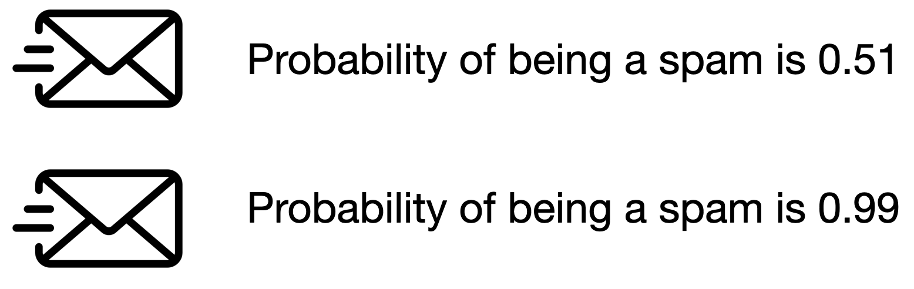
. . .
Both emails would be classified as spam. However, we’d have greater confidence in our classification for the second email.
Technically, \(C(\boldsymbol{X})\) works with the conditional probability:
\[P(Y = 1 | X_1 = x_1, X_2 = x_2, \ldots, X_p = x_p) = P(Y = 1 | \boldsymbol{X} = \boldsymbol{x})\]
In words, this is the probability that \(Y\) takes a value of 1 given that the predictors \(\boldsymbol{X}\) have taken the values \(\boldsymbol{x} = (x_1, x_2, \ldots, x_p)\).
. . .
The conditional probability that \(Y\) takes the value of 0 is
\[P(Y = 0 | \boldsymbol{X} = \boldsymbol{x}) = 1 - P(Y = 1 | \boldsymbol{X} = \boldsymbol{x}).\]
Bayes Classifier
It turns out that, if we know the true structure of \(P(Y = 1 | \boldsymbol{X} = \boldsymbol{x})\), we can build a good classification function called the Bayes classifier:
\[C(\boldsymbol{X}) = \begin{cases} 1, & \text{if}\ P(Y = 1 | \boldsymbol{X} = \boldsymbol{x}) > 0.5 \\ 0, & \text{if}\ P(Y = 1 | \boldsymbol{X} = \boldsymbol{x}) \leq 0.5 \end{cases}.\]
This function classifies to the most probable class using the conditional distribution \(P(Y | \boldsymbol{X} = \boldsymbol{x})\).
HOWEVER, we don’t (and will never) know the true form of \(P(Y = 1 | \boldsymbol{X} = \boldsymbol{x})\)!
. . .
To overcome this issue, we several standard solutions:
- Logistic Regression: Impose an structure on \(P(Y = 1 | \boldsymbol{X} = \boldsymbol{x})\). Not covered here.
- K-Nearest Neighbours: Estimate \(P(Y = 1 | \boldsymbol{X} = \boldsymbol{x})\) directly. What we will cover today.
- Classification Trees and Ensemble methods: Estimate \(P(Y = 1 | \boldsymbol{X} = \boldsymbol{x})\) directly. Later.
Two datasets
The application of data science algorithms needs two data sets:
Training data is data that we use to train or construct the estimated function \(\hat{C}(\boldsymbol{X})\).
Test data is data that we use to evaluate the classification performance of \(\hat{C}(\boldsymbol{X})\) only.
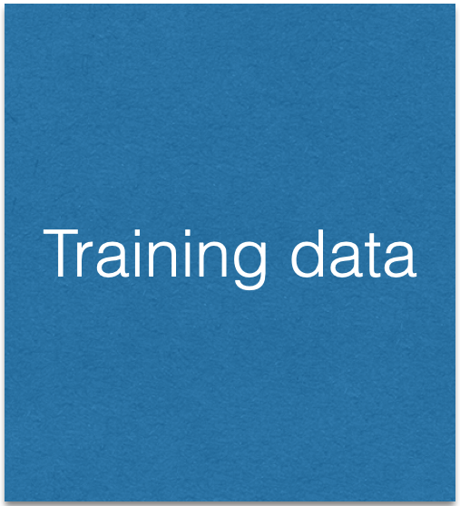
A random sample of \(n\) observations.
Use it to construct \(\hat{C}(\boldsymbol{X})\).
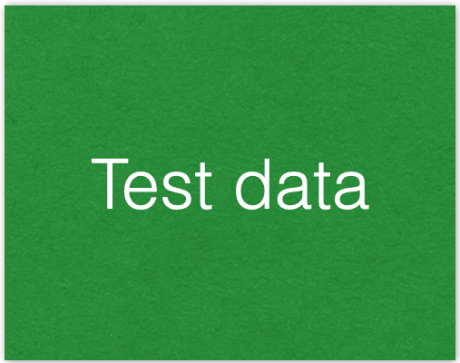
Another random sample of \(n_t\) observations, which is independent of the training data.
Use it to evaluate \(\hat{C}(\boldsymbol{X})\).
Example 2: Identifying Counterfeit Banknotes

Dataset
The data is located in the file “banknotes.xlsx”.
bank_data = pd.read_excel("banknotes.xlsx")
# Set response variable as categorical.
bank_data['Status'] = pd.Categorical(bank_data['Status'])
bank_data.head()| Status | Left | Right | Bottom | Top | |
|---|---|---|---|---|---|
| 0 | genuine | 131.0 | 131.1 | 9.0 | 9.7 |
| 1 | genuine | 129.7 | 129.7 | 8.1 | 9.5 |
| 2 | genuine | 129.7 | 129.7 | 8.7 | 9.6 |
| 3 | genuine | 129.7 | 129.6 | 7.5 | 10.4 |
| 4 | genuine | 129.6 | 129.7 | 10.4 | 7.7 |
Let’s generate training and test data
We split the current dataset into a training and a test dataset using train_test_split() from scikit-learn.
The function has three main inputs:
- A pandas dataframe with the predictor columns only.
- A pandas dataframe with the response column only.
- The parameter
test_sizewhich sets the portion of the dataset that will go to the test set.
Create the predictor matrix
We use the function .filter() from pandas to select two predictors: Top and Bottom.
# Set full matrix of predictors.
X_full = bank_data.filter(['Top', 'Bottom'])
X_full.head(4)| Top | Bottom | |
|---|---|---|
| 0 | 9.7 | 9.0 |
| 1 | 9.5 | 8.1 |
| 2 | 9.6 | 8.7 |
| 3 | 10.4 | 7.5 |
Create the response column
We use the function .filter() from pandas to extract the column Status from the data frame. We store the result in Y_full.
# Set full matrix of responses.
Y_full = bank_data.filter(['Status'])
Y_full.head(4)| Status | |
|---|---|
| 0 | genuine |
| 1 | genuine |
| 2 | genuine |
| 3 | genuine |
Set the target category
To set the target category in the response we use the get_dummies() function.
# Create dummy variables.
Y_dummies = pd.get_dummies(Y_full, dtype = 'int')
# Select target variable.
Y_target_full = Y_dummies['Status_counterfeit']
# Show target variable.
Y_target_full.head() 0 0
1 0
2 0
3 0
4 0
Name: Status_counterfeit, dtype: int64Let’s partition the dataset
X_train, X_test, Y_train, Y_test = train_test_split(X_full, Y_target_full,
stratify = Y_target_full,
test_size = 0.3)The function makes a clever partition of the data using the empirical distribution of the response.
The argument
stratifyallows us to split the data so that the distribution of the response under the training and test sets is similar.Usually, the proportion of the dataset that goes to the test set is 20% or 30%.
Training Data
training_dataset = pd.concat([X_train, Y_train], axis = 1)
training_dataset.head()| Top | Bottom | Status_counterfeit | |
|---|---|---|---|
| 149 | 12.3 | 9.9 | 1 |
| 28 | 10.5 | 7.4 | 0 |
| 122 | 10.6 | 11.6 | 1 |
| 90 | 9.6 | 8.6 | 0 |
| 25 | 11.0 | 8.0 | 0 |
“Test” Data
test_dataset = pd.concat([X_test, Y_test], axis = 1)
test_dataset.head()| Top | Bottom | Status_counterfeit | |
|---|---|---|---|
| 137 | 11.2 | 9.3 | 1 |
| 164 | 10.5 | 11.4 | 1 |
| 94 | 10.0 | 8.3 | 0 |
| 14 | 10.8 | 7.7 | 0 |
| 175 | 10.7 | 11.9 | 1 |
K-nearest neighbors
K-nearest neighbors (KNN)
KNN a supervised learning algorithm that uses proximity to make classifications or predictions about the clustering of a single data point.
- Basic idea: Predict a new observation using the K closest observations in the training dataset.
To predict the response for a new observation, KNN uses the K nearest neighbors (observations) in terms of the predictors!
The predicted response for the new observation is the most common response among the K nearest neighbors.
The algorithm has 3 steps:
Choose the number of nearest neighbors (K).
For a new observation, find the K closest observations in the training data (ignoring the response).
For the new observation, the algorithm predicts the value of the most common response among the K nearest observations.
Nearest neighbour
Suppose we have two groups: red and green group. The number line shows the value of a predictor for our training data.
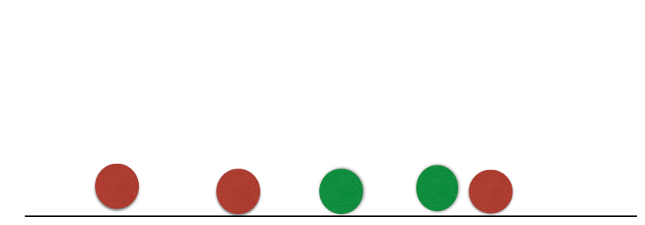
A new observation arrives, and we don’t know which group it belongs to. If we had chosen \(K=3\), then the three nearest neighbors would vote on which group the new observation belongs to.
Nearest neighbour
Suppose we have two groups: red and green group. The number line shows the value of a predictor for our training data.
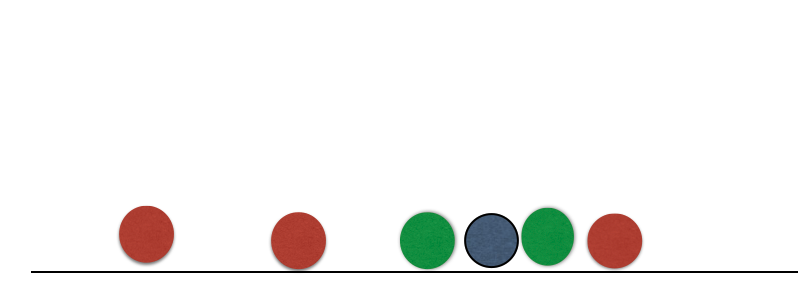
A new observation arrives, and we don’t know which group it belongs to. If we had chosen \(K=3\), then the three nearest neighbors would vote on which group the new observation belongs to.
Nearest neighbour
Suppose we have two groups: red and green group. The number line shows the value of a predictor for our training data.
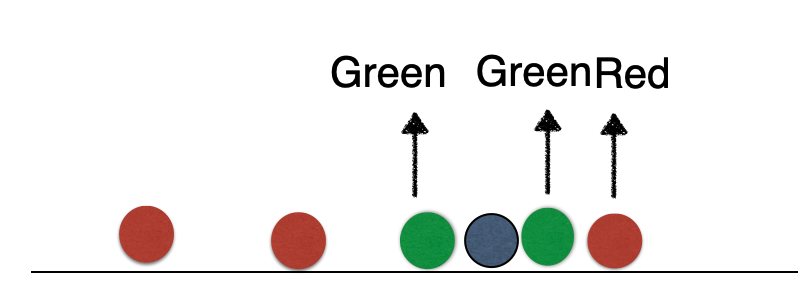
A new observation arrives, and we don’t know which group it belongs to. If we had chosen \(K=3\), then the three nearest neighbors would vote on which group the new observation belongs to.
Nearest neighbour
Suppose we have two groups: red and green group. The number line shows the value of a predictor for our training data.
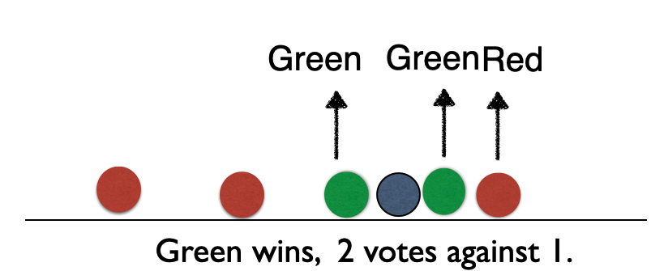
A new observation arrives, and we don’t know which group it belongs to. If we had chosen \(K=3\), then the three nearest neighbors would vote on which group the new observation belongs to.
Banknote data
Using \(K = 3\), that’s 2 votes for “genuine” and 2 for “fake.” So we classify it as “genius.”
Banknote data
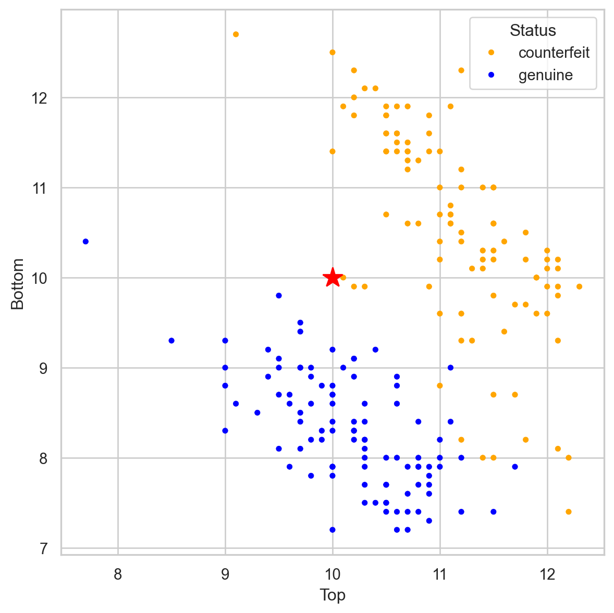
Using \(K = 3\), that’s 2 votes for “genuine” and 2 for “fake.” So we classify it as “genius.”
Banknote data

Using \(K = 3\), that’s 3 votes for “counterfeit” and 0 for “genuine.” So we classify it as “counterfeit.”
Banknote data
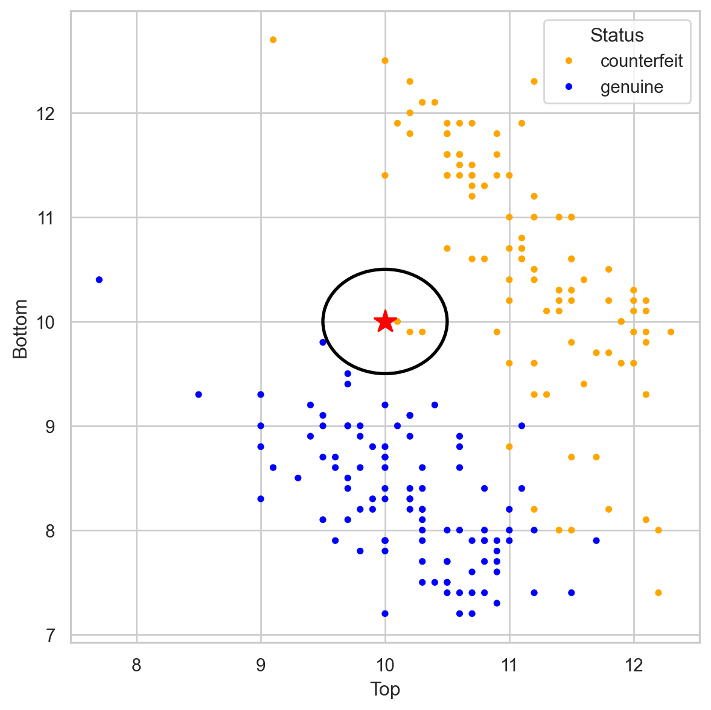
Using \(K = 3\), that’s 3 votes for “counterfeit” and 0 for “genuine.” So we classify it as “counterfeit.”
Closeness is based on Euclidean distance.
Implementation Details
Ties
If there are more than K nearest neighbors, include them all.
If there is a tie in the vote, set a rule to break the tie. For example, randomly select the class.
Predictor standarization
- KNN uses the Euclidean distance between observations Therefore, as a first step, we must transform the predictors so that they have the same units!
Standardization in Python
To standardize numeric predictors, we use the StandardScaler() function. We also apply the function to variables using the fit_transform() function.
scaler = StandardScaler()
Xs_train = scaler.fit_transform(X_train)KNN in Python
In Python, we can use the KNeighborsClassifier() and .fit() from scikit-learn to train a KNN.
In the KNeighborsClassifier function, we can define the number of nearest neighbors using the n_neighbors parameter.
# For example, let's use KNN with three neighbours
knn = KNeighborsClassifier(n_neighbors=3)
# Now, we train the algorithm.
knn.fit(Xs_train, Y_train)Estimated conditional probabilities
After training a KNN, we can calculate the estimated conditional probability \(\hat{P}(Y = 1 | \boldsymbol{X} = \boldsymbol{x})\).
To this end, let
- \(\hat{p}_1(\boldsymbol{x}) = \hat{P}(Y = 1 | \boldsymbol{X} = \boldsymbol{x})\)
- \(\hat{p}_0(\boldsymbol{x}) = 1 - \hat{p}_1(\boldsymbol{x})\)
be the estimated probabilities that \(\boldsymbol{x}\) belongs to class 1 or 0.
Essentially, we calculate \(\hat{p}_1(\boldsymbol{x})\) and \(\hat{p}_0(\boldsymbol{x})\) as follows:
- Select the K nearest neighbors to the observation \(\boldsymbol{x}\).
- \(\hat{p}_1(\boldsymbol{x})\) is the proportion of K nearest neighbors that belong to class 1. \(\hat{p}_0(\boldsymbol{x})\) is the proportion of K nearest neighbors that belong to class 0.
Predicted probabilities in Python
Using our trained KNN, we classify observations in the test dataset using only the predictor values from this set. To do this, we must first standardize the predictors in the test dataset.
Xs_test = scaler.fit_transform(X_test)The .predict_proba() function generates the probabilities used by the algorithm to assign the classes.
predicted_probability = knn.predict_proba(Xs_test)predicted_probability array([[0. , 1. ],
[0. , 1. ],
[1. , 0. ],
[1. , 0. ],
[0. , 1. ],
[0. , 1. ],
[0. , 1. ],
[1. , 0. ],
[1. , 0. ],
[1. , 0. ],
[1. , 0. ],
[0. , 1. ],
[0. , 1. ],
[0. , 1. ],
[1. , 0. ],
[0. , 1. ],
[1. , 0. ],
[0. , 1. ],
[1. , 0. ],
[1. , 0. ],
[1. , 0. ],
[0. , 1. ],
[0. , 1. ],
[1. , 0. ],
[1. , 0. ],
[0. , 1. ],
[1. , 0. ],
[0. , 1. ],
[1. , 0. ],
[0. , 1. ],
[0. , 1. ],
[0. , 1. ],
[0. , 1. ],
[1. , 0. ],
[1. , 0. ],
[0. , 1. ],
[0. , 1. ],
[0. , 1. ],
[0.33333333, 0.66666667],
[0. , 1. ],
[0. , 1. ],
[0. , 1. ],
[1. , 0. ],
[1. , 0. ],
[0. , 1. ],
[1. , 0. ],
[0. , 1. ],
[1. , 0. ],
[1. , 0. ],
[0. , 1. ],
[1. , 0. ],
[1. , 0. ],
[0. , 1. ],
[0. , 1. ],
[0. , 1. ],
[1. , 0. ],
[0.66666667, 0.33333333],
[1. , 0. ],
[0. , 1. ],
[0.33333333, 0.66666667]])Estimated Bayes Classifier
Once we have estimated the conditional probability using KNN, we plug it into the Bayes classifier to have our approximated function:
\[\hat{C}(\boldsymbol{x}) = \begin{cases} 1, & \text{if}\ \hat{p}_1(\boldsymbol{x}) > 0.5 \\ 0, & \text{if}\ \hat{p}_1(\boldsymbol{x}) \leq 0.5 \end{cases},\]
where \(\hat{p}_1(\boldsymbol{x})\) depends on the K nearest neighbors to \(\boldsymbol{x}\).
In Python
The .predict() function generates actual classes to which each observation was assigned.
Y_pred_knn = knn.predict(Xs_test)
Y_pred_knnarray([1, 1, 0, 0, 1, 1, 1, 0, 0, 0, 0, 1, 1, 1, 0, 1, 0, 1, 0, 0, 0, 1,
1, 0, 0, 1, 0, 1, 0, 1, 1, 1, 1, 0, 0, 1, 1, 1, 1, 1, 1, 1, 0, 0,
1, 0, 1, 0, 0, 1, 0, 0, 1, 1, 1, 0, 0, 0, 1, 1])0 for the reference class and 1 for the target class.
Confusion Matrix and Accuracy
Confusion matrix
Table to evaluate the performance of a classifier.
Compares actual values with the predicted values of a classifier.
Useful for binary and multiclass classification problems.

In Python
We calculate the confusion matrix using the homonymous function scikit-learn.
# Compute confusion matrix.
cm = confusion_matrix(Y_test, Y_pred_knn)
# Show confusion matrix.
print(cm)[[27 3]
[ 0 30]]We can display the confusion matrix using the ConfusionMatrixDisplay() function.
ConfusionMatrixDisplay(cm).plot()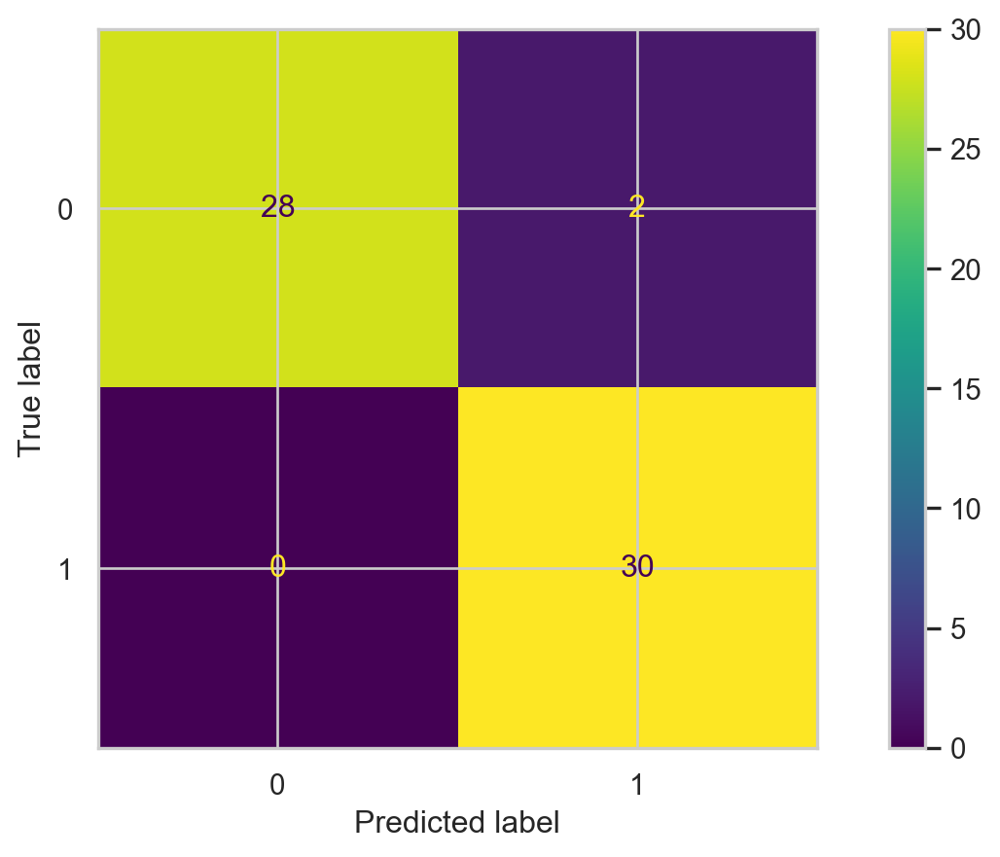
Accuracy
A simple metric for summarizing the information in the confusion matrix is accuracy. It is the proportion of correct classifications for both classes, out of the total classifications performed.
In Python, we calculate accuracy using the scikit-learn accuracy_score() function.
accuracy = accuracy_score(Y_test, Y_pred_knn)
print( round(accuracy, 2) )0.95The higher the accuracy, the better the performance of the classifier.
Finding the best value of K
Finding the best value of K
We can determine the best value of K for the KNN algorithm using \(K\)-fold cross-validation (CVV). To this end, we need to set up a grid search to try out different values of \(K\) and measure its performance in terms of the \(K\)-fold CV estimate of accuracy.
We specify the grid search as follows:
# Set the parameter to be changed and the range of values.
param_grid = {'n_neighbors': range(1, 31)}
# Create a KNeighborsClassifier object
knn_KFoldCV = KNeighborsClassifier()
# Set the grid search using K-fold CVV.
grid_search = GridSearchCV(knn_KFoldCV, param_grid, cv = 5,
scoring = 'accuracy')Now, we actually run the grid search.
# Run the search.
grid_search.fit(Xs_train, Y_train)We see the K-fold CV estimates of accuracy for each value of K:
k_values = list(param_grid['n_neighbors'])
validation_accuracies = grid_search.cv_results_['mean_test_score']
validation_accuraciesarray([0.97857143, 0.95714286, 0.96428571, 0.96428571, 0.95714286,
0.96428571, 0.96428571, 0.95714286, 0.95714286, 0.95714286,
0.95714286, 0.95 , 0.95 , 0.95 , 0.95714286,
0.95 , 0.95714286, 0.95714286, 0.95714286, 0.95714286,
0.95714286, 0.95714286, 0.95714286, 0.95714286, 0.95714286,
0.95714286, 0.95714286, 0.95714286, 0.95714286, 0.95714286])Visualize
We can then visualize the accuracy for different values of \(K\) using the following graph and code.
Code
plt.figure(figsize=(6.3, 4.3))
plt.plot(k_values, validation_accuracies, marker="o", linestyle="-", color='b')
plt.xlabel("Number of Neighbors (k)")
plt.ylabel("Validation Accuracy")
plt.title("Choosing the Best k for KNN")
plt.grid(True, linestyle='--', alpha=0.6)
plt.show()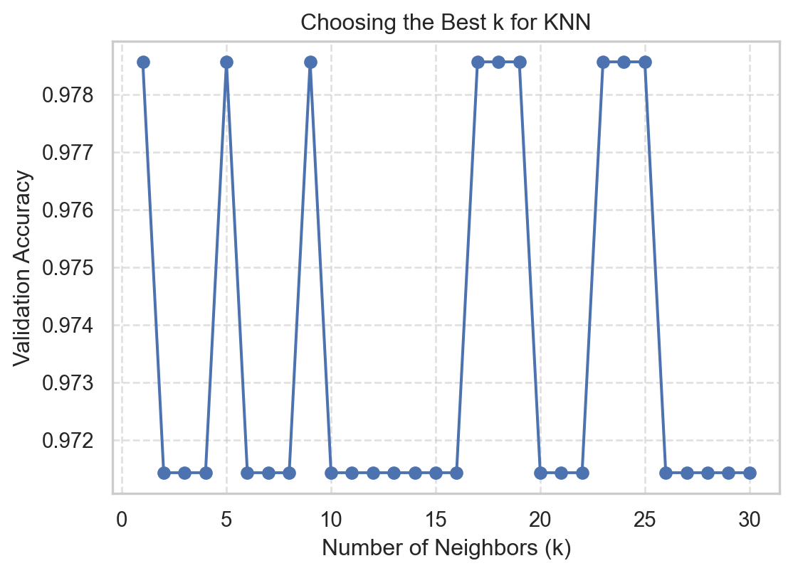
Best value of K
We can easily determine the best value of K using the function .best_params_['n_neighbors'].
# Find the best value of K
best_k = grid_search.best_params_['n_neighbors']
best_k1Train the final KNN
Finally, we select the best number of nearest neighbors contained in the best_k object.
KNN_final = KNeighborsClassifier(n_neighbors = best_k)
KNN_final.fit(Xs_train, Y_train)The accuracy of the best KNN is
Y_pred_KNNfinal = KNN_final.predict(Xs_test)
test_accuracy = accuracy_score(Y_test, Y_pred_KNNfinal)
print(test_accuracy)0.9333333333333333Discussion
KNN is intuitive and simple and can produce decent predictions. However, KNN has some disadvantages:
When the training dataset is very large, KNN is computationally expensive. This is because, to predict an observation, we need to calculate the distance between that observation and all the others in the dataset. (“Lazy learner”).
In this case, a decision tree is more advantageous because it is easy to build, store, and make predictions with.
The predictive performance of KNN deteriorates as the number of predictors increases.
This is because the expected distance to the nearest neighbor increases dramatically with the number of predictors, unless the size of the dataset increases exponentially with this number.
This is known as the curse of dimensionality.
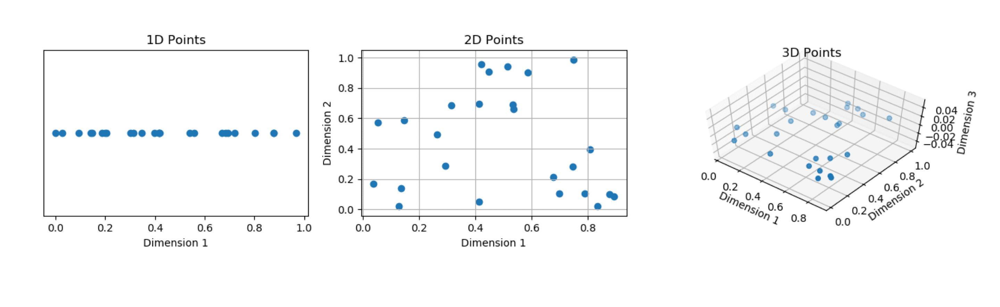